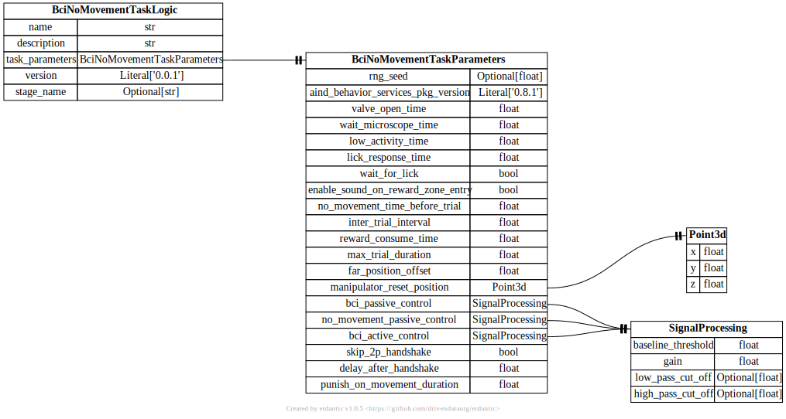

api.task_logic¶
{kind=link}
- pydantic model aind_bci_no_movement.task_logic.BciNoMovementTaskLogic[source]¶
Bases:
AindBehaviorTaskLogicModel- Config:
extra: str = forbid
validate_assignment: bool = True
validate_defaults: bool = True
strict: bool = True
str_strip_whitespace: bool = True
- Fields:
- Validators:
coerce_version»version
- field task_parameters: BciNoMovementTaskParameters [Required][source]¶
Parameters of the task logic
- pydantic model aind_bci_no_movement.task_logic.BciNoMovementTaskParameters[source]¶
Bases:
TaskParameters- Config:
extra: str = allow
validate_assignment: bool = True
validate_defaults: bool = True
strict: bool = True
str_strip_whitespace: bool = True
- Fields:
- Validators:
- field bci_active_control: SignalProcessing = SignalProcessing(baseline_threshold=0, gain=1, low_pass_cut_off=None, high_pass_cut_off=None)[source]¶
BCI active control parameters
- field bci_passive_control: SignalProcessing = SignalProcessing(baseline_threshold=0, gain=1, low_pass_cut_off=None, high_pass_cut_off=None)[source]¶
BCI control parameters
- field delay_after_handshake: float = 0.5[source]¶
Delay after handshake (s). It will still be used if skip_2p_handshake is False.
- Constraints:
ge = 0
- field enable_sound_on_reward_zone_entry: bool = True[source]¶
Enables audio feedback on reward zone entry.
- field far_position_offset: float = 8[source]¶
Offset (mm) from the close position to the far position.
- Constraints:
ge = 0
- field lick_response_time: float = 2[source]¶
Interval (s) for the animal to collect reward. Only applies if waitForLick is true.
- Constraints:
ge = 0
- field low_activity_time: float = 1[source]¶
Duration (s) BCI activity must stay low before starting a new trial.
- Constraints:
ge = 0
- field manipulator_reset_position: Point3d = Point3d(x=0, y=0, z=0)[source]¶
Position (mm) to reset the manipulator to.
- field no_movement_passive_control: SignalProcessing = SignalProcessing(baseline_threshold=0, gain=1, low_pass_cut_off=None, high_pass_cut_off=None)[source]¶
No movement control parameters
- field no_movement_time_before_trial: float = 0[source]¶
Interval (s) subjects must not move for to start a new trial.
- Constraints:
ge = 0
- field punish_on_movement_duration: float = 0[source]¶
The duration (s) that the spout will stop updating if the animal moves during the trial.
- Constraints:
ge = 0
- field reward_consume_time: float = 2[source]¶
Duration (s) for the animal to consume reward.
- Constraints:
ge = 0